Change Over Title
Linked by Air
2014
See original publication here.
Change Over Time
Probably the essential thesis of our firm is that things evolve over time. There is the process of developing a design, but also the life of a design after the project “launches.” When we design a website or an exhibition, we want it to go places we didn’t imagine after we “release” it, and this, more than the supposed wisdom of crowds, is the reason for our interest in distributed authorship. Even though change is the most natural and ubiquitous condition in the universe, we’re fascinated by it, and we try to embed an acknowledgement of this condition into our working process, and into the software and designs we develop.
Furthermore, the presentation of changing content is the single salient feature of graphic design for technological platforms. Books change – they deteriorate and are understood in different ways over the years, and they might even be revised, reprinted or translated, annotated or re-used. A book may also be understood as having various timelines or sequences, including the duration of reading and writing, and the durations of its internal narratives. But screens are the medium that is truly meant to show changing content. Therefore that’s the feature we often seek to exploit and explore when we have the opportunity to design for screens. This interest also takes us to public spaces and cities, where changing patterns of use, shifting architectural configurations and the motion of users may create environments as dynamic as any screen, especially when approached with a contemporary feeling for the significance of flux. In turn, our approaches to all these areas tend to inform our designs for printed matter as well.
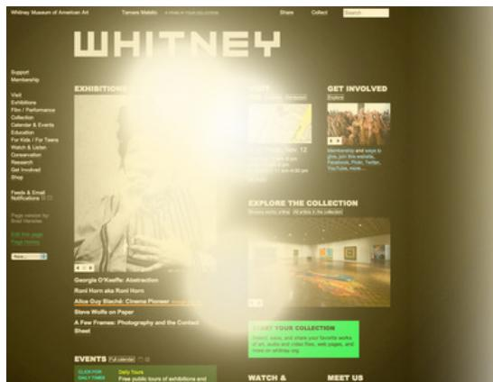
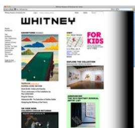
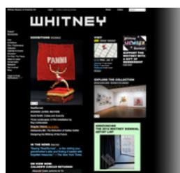
On the Whitney Museum's website, every night at sunset the site turns from white to black, and every morning at sunrise it turns back to white. Each season, a new artist is commissioned to produce a 30-second work that appears at sunset and sunrise every night, to usher the site through its transition. Everyone on the site at the right time sees the work together. If you miss it, you have to come back the next day. The sunset communicates a few things. For one, that the museum has a global presence but is in New York. Wherever you're viewing the site from, you see sunset when it's occurring in New York, according to New York's rhythms. Time helps communicate place in a global context. Second, that visiting a museum is being part of a community. You are seeing sunset at the same time as everyone else (we explored this idea in a different way with our Kids project). Third, that the website is itself a surface for art, not just pictures of art – a virtual museum in its own right, and an environment as much as an instrument. And finally, that the website and the museum, like the natural world, are constantly changing.
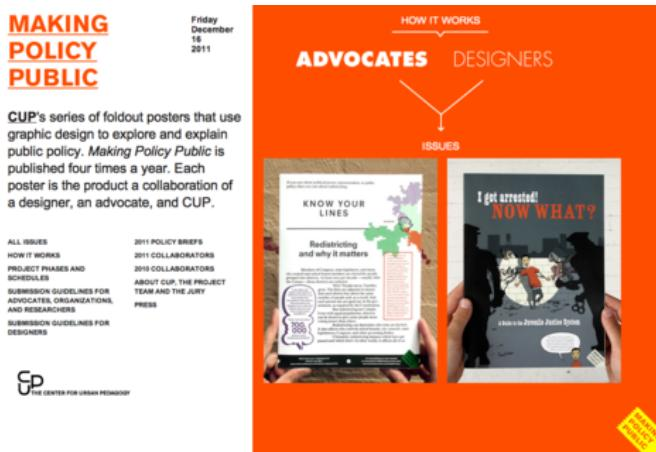
The Making Policy Public site seeks to match graphic designers with civic and policy advocates. To help communicate the dynamism of this project and also the dynamism of its often urban context, the site has a different color each day – but on an eight-day, not a seven-day rhythm, a syncopated tempo that always moves forward and isn't quite stable.
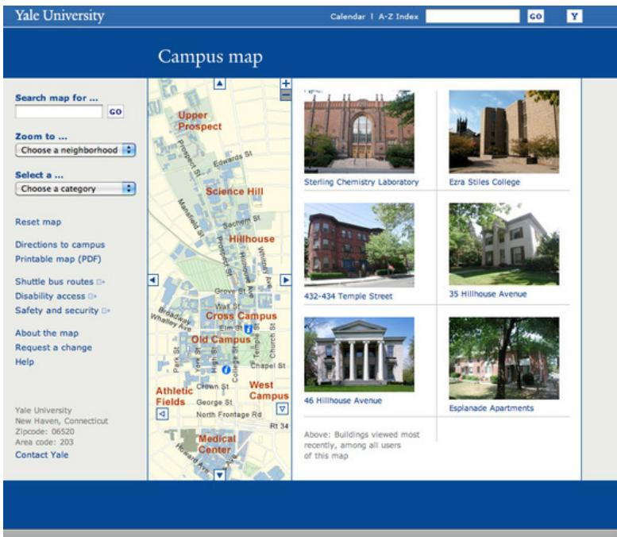
When we designed Yale's campus map, we added a feature to show the most recent buildings viewed by all users of the map. It updates every few seconds. Besides some practical value (you might see the building you're looking for, and it can be easy to get back to a building you yourself recently found), the feature helps surface some of Yale's more everyday buildings. Frankly we don't think Yale is best defined by its supposedly well-known neo-gothic landmarks. Like the Whitney's sunset, this feature also telegraphs that Yale is a community of fellow travelers – the best way to define Yale.
This screen for Do Ho Suh's Perfect Home project shows 16 years of global ocean current movement, drawn from NOAA's OSCAR satellite remote sensing project; as well as Do Ho's own flight patterns over the years, animal migrations, wave height, seasonal water temperature, and more. About 64 million data points are represented. The screen alternates among four different ways of displaying the data, including waving lines, breathing eggs, spinning discs, and 95 kinds of pop currency.
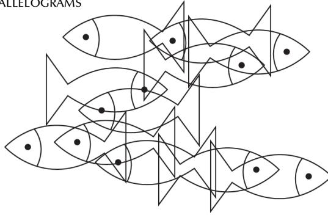
When Parallelograms asked us to contribute a piece of work, we thought about something that could symbolize our interest in change. We resurrected the fish screensaver, but with a twist. The fish get bigger each day (they have a growth spurt each night at midnight, to be precise). Every seven days they get small again. The bigger fish overlap each other, creating interesting patterns. They swim back and forth in the aquarium of your browser window (a smaller aquarium if you make your browser window smaller). Finally, if you get lucky you'll see a rare special fish.
This simple project highlighted an part of our approach to projects that deal with change. They aren't the sum of their data. Based on our understanding of each context, we design the fish – or the ocean movement markers, or the modules in a content management system – and these are the characters in a drama scripted by others.
2. Sites that are designed to change
Many of our sites are designed to change. They don't change on their own; rather, they are dependent on limitless streams of dynamic external input, and their design is built around ideas about the nature of those streams.
These "digital mirrors" in Prada's New York store don't show anything on their own. Their design is just an algorithm that processes incoming images, showing passers by. There were eleven screens in the store, each with a different algorithm. So as you move through the store, you see the stream of reality transformed in eleven different ways.
In Prada's Los Angeles store, ghostly, life-size projections of mannequins cat-walk up to you. To prove it's real, each one wears the day's celebrity gossip news, an "event garment" generated by our software every morning.
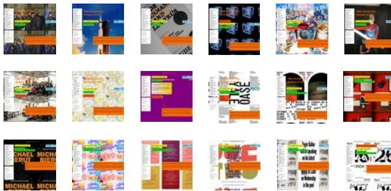
Our sites for the Yale School of Art, the Whitney Museum, and Brand New School were all predicated on the idea that a broad group of contributors would expand each site over time in unpredictable ways, allowing art, video, events, and many other facets of each institution's programming to be presented in heterogeneous, non-parallel ways that could surprise and engage visitors and content creators alike. Between those three sites, almost 230,000 versions of 8,000 different pages have been created by now, by hundreds of different authors.
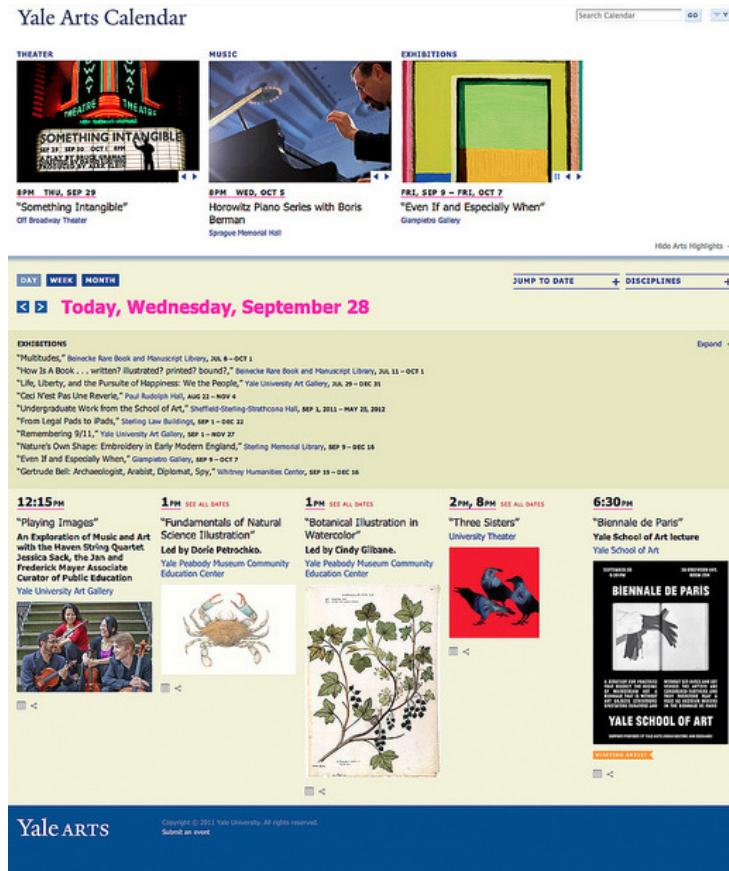
3. Calendars
Not surprisingly, the design of actual calendars has been a theme in our practice.
The Yale Arts Calendar brings arts events and performances from many institutions and departments across this large university, together onto one surface. Members of the public can find something that interests them, and students at the undergraduate and graduate level can use the calendar as a tool to stimulate collaboration across disciplines and to find inspiration.
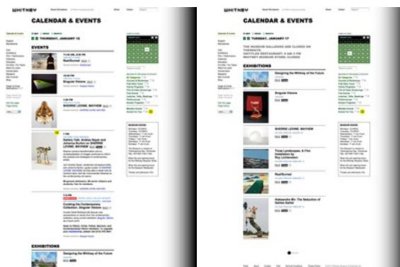
The Whitney's powerful calendar features careful typographic articulation so you can scan to find something that interests you, and easily see what's going on when you're visiting. Kids and members-only events are flagged with special badges, and if you're logged in as a member or have specified some preferences, events for your membership level or within your interests are flagged as "for you."
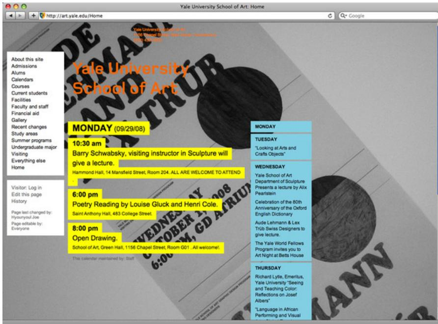
The Yale School of Art's prominent calendar gives students, staff and faculty a reason to look at the home page, and then to improve it if they think they can make it better. It also telegraphs the site's main purpose: to show you what the school is right now.
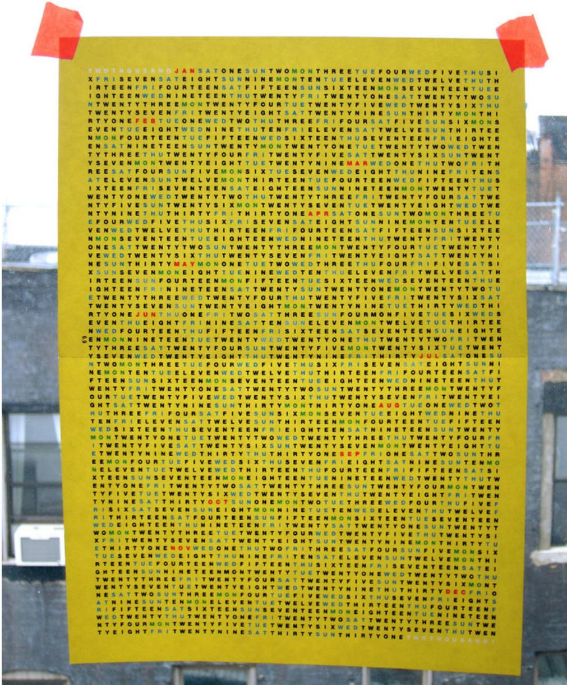
This numberless calendar actually does have one number...
4. Design is a time-based process
Design may represent change or it may change; or in the case of a calendar it may do both. Graphic design's relationship to time also shows the continuity between its use and its production.
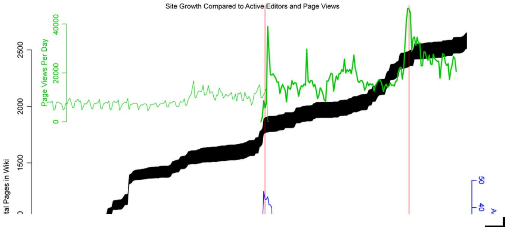
This chart shows the production and consumption of pages in whitney.org. Time moves along the horizontal axis. The heavy black line shows the production of pages in Economy, the site's content management system. The thickness of the line shows the average number of versions per page. Page production begins when we switched on Economy, continues through the launch, accelerates further around the Biennial, and keeps right on going. The launch is not a "big bang" after which the site suddenly pops into existence, nor is it the end of work on the site. It's just a moment among many moments, when the site becomes public.
The blue line shows the average number of people working on the site each week. You can see the spike before the launch to get everything together, and another spike around the Biennial.
The green line shows the number of end users visiting the website each day. Before the launch they were viewing the old site; after the launch they were viewing the new site and viewership increased significantly.
Most interestingly, only with the launch of the new site do the blue line (page editors) and the green line (page viewers) begin to move in parallel. Design production and design consumption, both time-based processes, begin to reinforce each other and propel each other forward. The twinning of these two lines is one of the central approaches of our practice.
The second chart in the slideshow above shows the rhythm and texture of page edits by all the people at the museum who worked on the site.
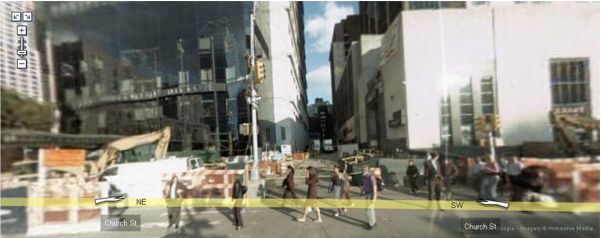
Google Street View's roving camera is a nice model for design, something Dan has written about. A 360-degree panoramic video camera is fixed to the roof of a van, which then drives the length of nearly every street in Manhattan, a looping, chaotic tracking shot that takes days to complete. Each frame of the resulting video is then extracted as a panoramic still image, correlated with the camera's geographic location at that moment, and stitched together into a single complex image. Consequently, the view at 50th Street and 8th Avenue may have been captured either a moment earlier or a moment later than the view at 51st and 8th: a map that is also a timeline. Strange temporal effects occur, like surprising implications of an advanced physics. A car reappears Cheshire cat-like at multiple intersections because it happened to drive behind the camera for a while. The project doesn't try too hard to hide its own technical structure, even though that structure is strange, complicated, un-geometric, and surprising.
An ongoing project of ours is Sauron, a system which, a bit like Street View, saves a screen capture of every page in all of our websites whenever it changes. These can then be assembled back into timelines. This animation shows the evolution of the 40 most popular pages on whitney.org, again starting when we switched on the content management system, through the launch, and for several months thereafter. At the bottom you can see the names of the people who worked on the site each day.
5. Chaos and calculus
Design should be a part of the world, and movement is a fascinating thing in the world. Marcel Duchamp, who suggested the word "mobile" to Calder, is said to have commented that what he liked best about his own bicycle wheel construction was to watch it spin, because it reminded him of watching a fire. Maybe it's in the same spirit that we've always loved the multiplicity and unpredictability of this video of Tamara's, of rain under a streetlight. Everything follows simple underlying rules, but where they go would be hard to predict...
Finally we've always loved this amazing video of NASA's. You get to feel all the surprise and complexity of the simple Newtonian physics of a booster rocket gradually falling back to earth under the force of nothing but gravity. We hope to inscribe some of this feeling of the strange beauty of the natural and man-made world, into our own work within that world.
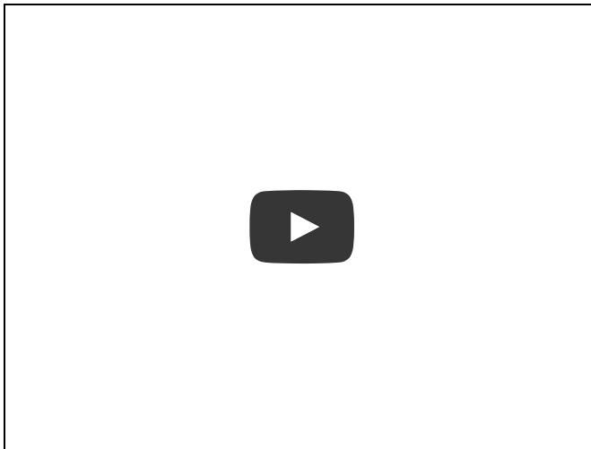